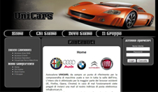

Cliccando i pulsanti situati nel menu principale (sul menu laterale sinistro) è possibile raggiungere le diverse funzionalità del sistema.
Se non si è loggati, quindi si accede come visitatore web libero,
è possibile visualizzare il parco delle vetture disponibili nel concessionario
premendo sul pulsante "Visualizza parco veicoli"nella "sezione indice contenuti".
Una volta scelto il veicolo preferito è possibile segnalare il proprio interesse per quella
veicolo.
Se si è loggati in qualità di OPERATORE è possibile visualizzare tutte le interfacce del sistema che permetteranno la gestione degli appuntamenti e delle vendite.